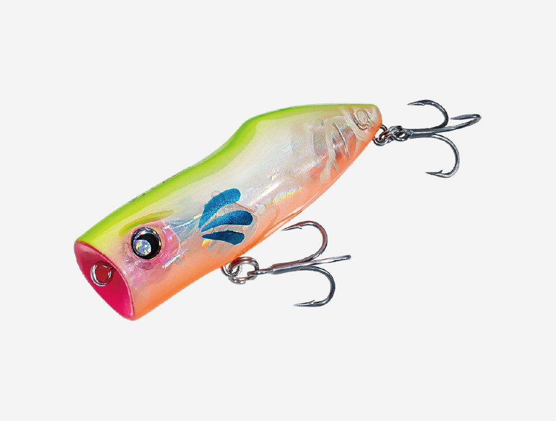
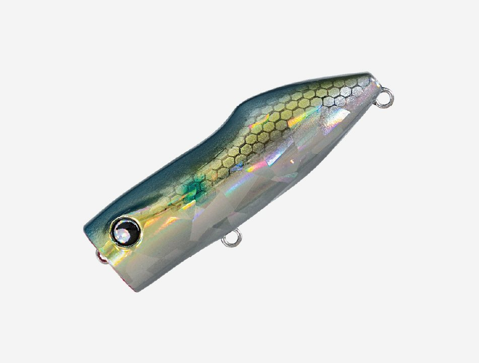
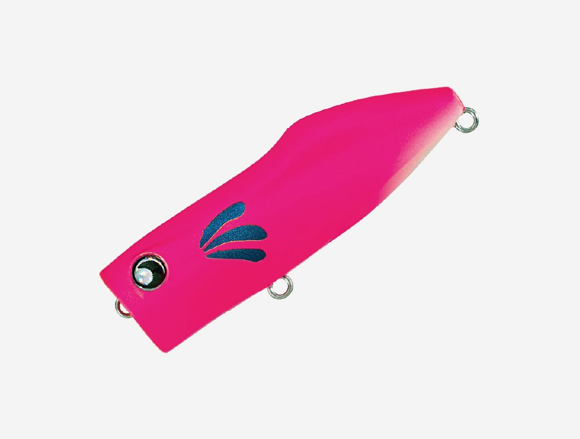
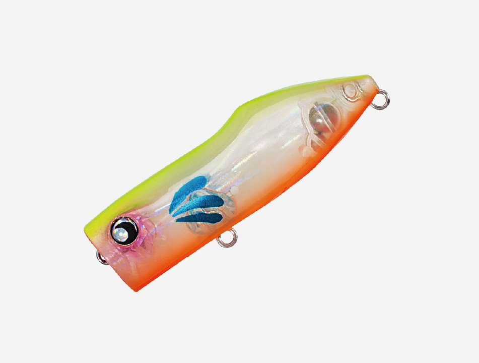
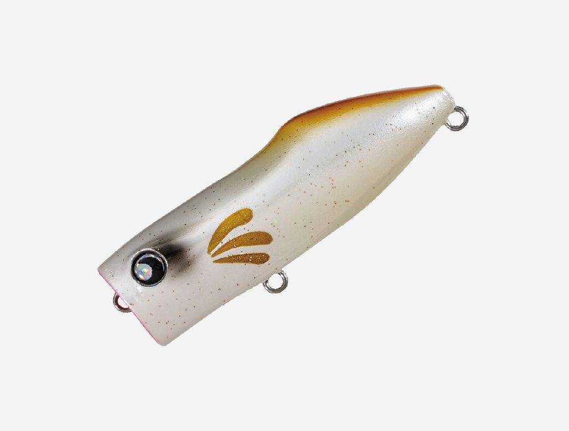
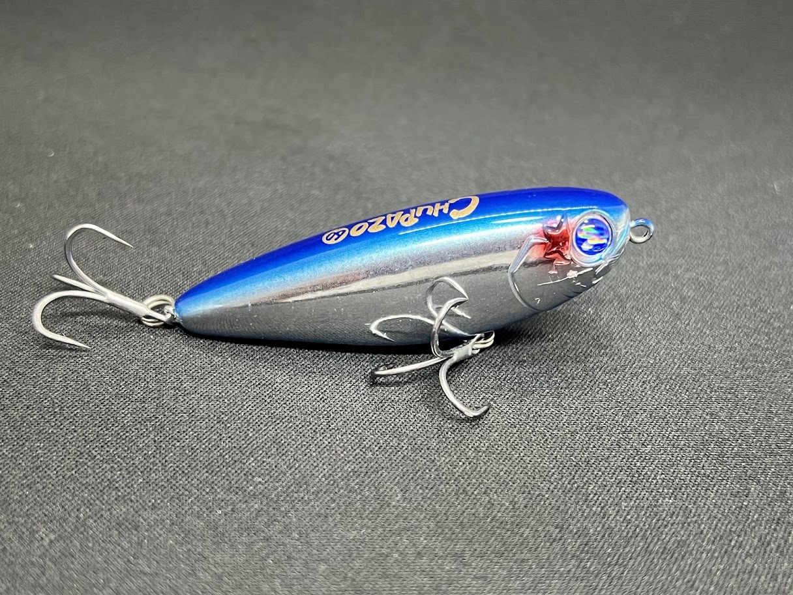
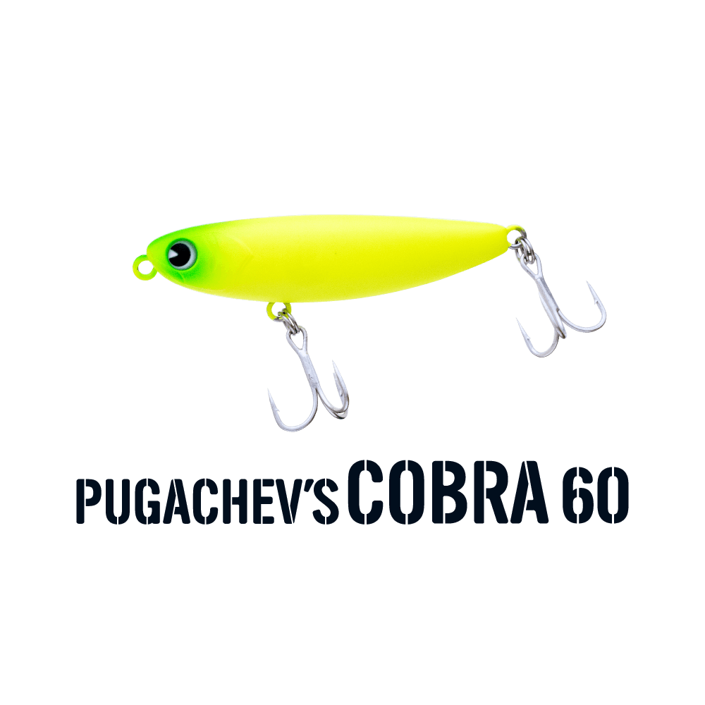
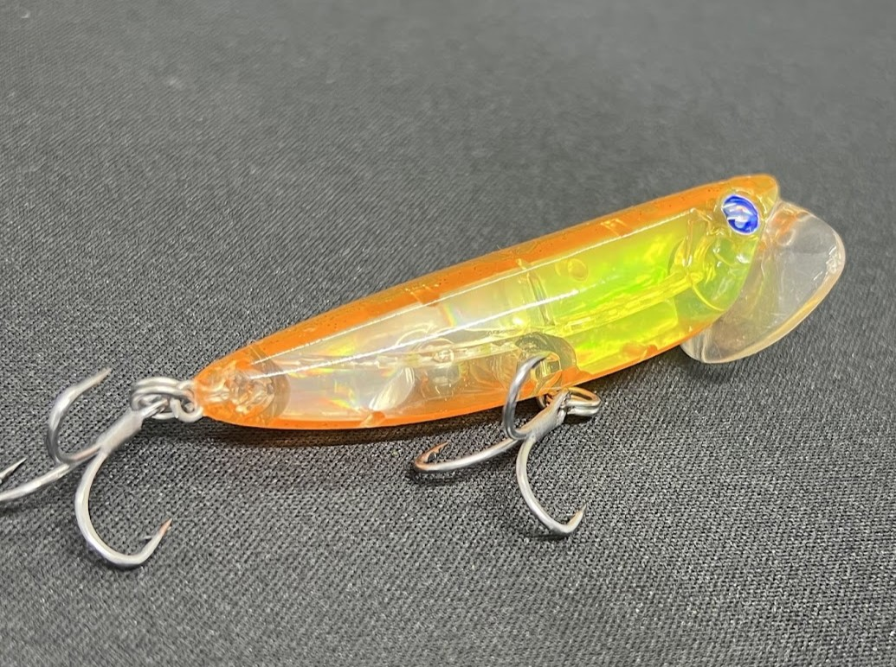

ミニコバコ
（MINIKOBAKO）
ミニコバコ（MINIKOBAKO）はGOTO9（ゴートゥーナイン）のフローティングポッパーです。
チヌとシーバスに主眼を置いて開発された53mmの小型ポッパーで、小場所やサイトなど「興味は持つけど食わせるまで至らない」スレた個体や、壁チヌのように追う距離が極めて短い個体に有効な1本。「誘う」「ネチる」「泳ぐ」の3アクションを組み合わせて、その日のストライクゾーンを幅広く探せます。

画像出典:GOTO9公式HP
スペック
- メーカー
- GOTO9（ゴートゥーナイン）
- タイプ
- ポッパー（フローティング）
- 全長
- 53mm
- 自重
- 約6g
- レンジ
- 0〜5cm
- フック
- #10
- リング
- #1
- ターゲット
- チヌ・シーバス
- 価格
- 1,595円（税込）
▼今すぐチェック
ミニコバコの特徴
［誘う・ネチる・泳ぐ］多彩な“次の一手”で食わせる小型ポッパー
-
［誘う］移動距離を抑えた低音ポッピング
直下にダイブするような低音のポッピングで、移動距離を抑えて誘える。ストップ感が強く、まとった泡や水押しの中にルアーが浮上してくる挙動が特徴。
-
［ネチる］その場で細かく首を振る
ターンに近い、移動距離を抑えた細かな首振り。誘ったあとの追いが悪いときや、ストラクチャー際から離さずに誘い続けたいときに有効。
-
［泳ぐ］水面下5cmをフラフラ泳ぐウォブリング
スローからファストまで、水面下5cmをフラフラと泳ぐウォブリングアクション。ラインの揺れを嫌うスレたチヌや、シーバスのイナッコパターンなどに。
ミニコバコの使い方
3つのアクションを組み合わせて使います。
まずはポッピングで「誘い」、魚が寄ってきても食わないときは首振りで「ネチり」、ストラクチャー際から離さずに見せ続けます。ポッピングや首振りに反応が薄いときは、ただ巻きで水面下5cmを「泳がせる」のも有効。その日の反応を見ながらアクションを変えていくのが組み立ての基本です。
ミニコバコの得意な状況
小場所やサイトフィッシングで、チヌやシーバスを狙う状況が最大の出番。
岸壁に付く壁チヌのように追う距離が短い魚や、ルアーに興味は示すのに食い切らないスレた魚に効く1本です。シーバスのイナッコパターンでも使えます。
ワンポイント
移動距離を抑えて同じ場所で長く誘えるのがミニコバコの強み。壁際やストラクチャー際では、すぐに回収せず、ポッピングと首振りでじっくり見せましょう。
53mm・約6gの小型なので、ライトタックルで扱うと操作しやすくなります。
チヌ用トップウォーターの使い分け
| モデル | 全長／自重 | 得意な場面 |
|---|---|---|
| ミニコバコ | 53mm／約6g | 誘う・ネチる・泳ぐの3アクション。小場所やスレた魚に（本記事のモデル） |
| チュパゾー60 | 60mm／7g | チヌ用ペンシルベイト |
| プガチョフコブラ60 | 60mm／6g | 吸い込み重視のクロダイ用ペンシル |
| ラフトリック90F | 90mm／13.5g | 荒れた河口でも遠投できる大型ペンシル |
移動距離を抑えて同じ場所で誘いたいならポッパーのミニコバコ、広く探りたいならペンシルベイトと使い分けるのがオススメです。
人気カラー
ミニコバコは全8色展開。チヌ・シーバス狙いでオススメのカラーを厳選して紹介します。

イナッコボラの幼魚（イナッコ）パターンに合わせやすいナチュラル系。

マットピンク／テールグローマットピンクにテールグローを組み合わせたアピールカラー。

サマーチャート明るいチャート系。水面での視認性重視に。

みけこばこ三毛猫を思わせる個性的なカラー。
画像出典:GOTO9公式HP
ミニコバコに似ているルアー
-

チュパゾー60 ブルーブルー 詳細はこちら＞全長60mm・自重7gのチヌ用ペンシルベイト。ドッグウォークで広く探りたいときの持ち替えに。
-

プガチョフコブラ60 ima 詳細はこちら＞全長60mm・自重6gのクロダイ用トップウォーター。吸い込み重視の控えめアクションで、ミスバイトが多いときに。
-

イネムン60 ブルーブルー 詳細はこちら＞全長60mm・自重6gのクロダイ用トップウォータープラグ。同じクラスの重さで、ローテーションに組み込みやすい。